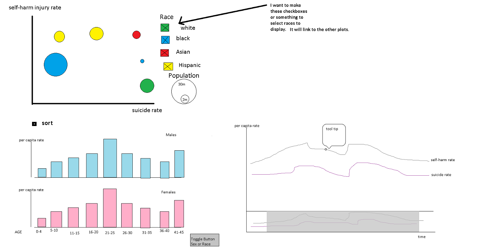

Project Sketch
Planned Tools
In preprocessing the data, I will use Excel because I can do it quicker in Excel than in Python or R. When prototyping, I plan on using Excel and/or Tableau to help me play with different visualization layouts. The javascript library I plan on using is primarily D3, but may other visualization libraries such as Crossfilter, xCharts.js, dimple.js, and/or polychart.js.
Planned Techniques
- Multi line time series chart
- The horizontal axis will be the Year and the vertical will be the per capita self-harm injury rate as one line and per capital suicide death rate as another line. This plot will be interactive with the ability to filter for sex, race, and age group. By plotting both the self-harm injury rate and suicide death rate, the visualization will show the trend of the two rates over time.
- Small multiples bar chart
- The x-axis will be the age groupings and the bars will represent per capita self-harm injury rate or per capita suicide death rate depending on the selection made by the user. This plot will have functionality to filter on sex and race. I will see if sorting the bars by the per capita rate is beneficial when prototyping in Tableau. This chart will emphasize any differences in sex or race for the different age groupings for the either of the per capita rates.
- Bubble chart
- I plan to plot the per capita self-harm injury rate on one axis and the per capita suicide rate on the other axis. The size of the bubbles will represent the population of the segment. The color of the bubbles will represent either sex or race. I may have a filter for this. This will show the relationship between the self-harm injury rate and the suicide rate for different groups.
Planned Interaction
- I plan to link as many of the interactions as possible between the various plots.
- tooltips - It will show the exact value for the line chart and bar chart, but show all the data for the bubble chart.
- filtering - I plan of filtering by sex, race, and age group.
- brushing - this will be in the context panel of the time series chart to select a time, but may not be practical since I only have yearly data from 2001-2013.
- panning & zooming - this will be in the time series chart, but may not be practical since I only have yearly data from 2001-2013.
- sorting - this will be used in the small multiples bar chart to sort by per capita rate vs. sorting by age goup.
Planned Interface
